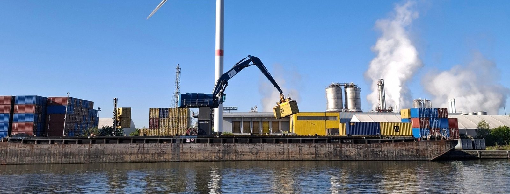
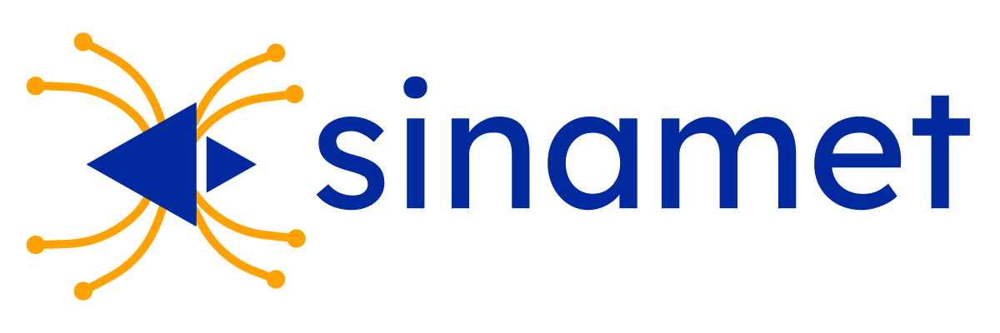
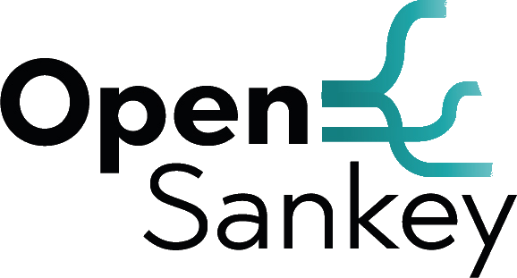

La carte et le Sankey réunis
Cliquez un territoire, visualisez ses flux ; une carte-récit prête pour vos rapports et votre plaidoyer.
Révélez les flux qui traversent vos territoires pour anticiper et décider.
Une seule plateforme pour cartographier, réconcilier et visualiser les données de votre filière.
Socle open source, 0 frais de licence, éligible aux achats publics innovants (< 100 k€ HT).

FilObsys s'adresse aux structures qui doivent transformer une donnée dispersée en connaissance partagée et actionnable.
Sur des cartes, à travers des Sankey et dans des tableaux de bord.
Pour vos rapports et présentations, sans reprise manuelle.
Sur la maîtrise des flux, pour mettre en récit et identifier indicateurs et leviers d'action.
Cliquez un territoire, visualisez ses flux ; une carte-récit prête pour vos rapports et votre plaidoyer.
Des chiffres incomplets ou contradictoires deviennent un bilan de flux cohérent.
Chaque valeur est tracée, sourcée, datée.
De la région aux communes, toutes les thématiques (déchets, alimentation, énergie…) sur un même socle.
Analysez au même endroit les flux de valeur ajoutée, les retombées en termes d'emploi, les impacts environnementaux.
Socle open source, qui reste en place au-delà du turnover des équipes, sans dépendance éditeur.
Du premier bilan de flux à l'observatoire pérenne, choisissez le niveau d'accompagnement qui correspond à votre filière et à votre territoire.
Une filière, un territoire, vos données existantes. Premiers livrables en 2 mois.
L'observatoire de référence de votre filière : interface dédiée, comité de pilotage, contrat pluriannuel (animation, données et support).
Méta-observatoire multi-filières pour région ou métropole, aligné sur vos stratégies (énergie, économie circulaire, circuits-courts…).
Éligible aux achats publics innovants : marchés < 100 k€ HT, procédure simplifiée pour les collectivités et leurs partenaires.
Discuter de mon projet
Structure et trace vos données : un modèle commun pour rassembler des sources hétérogènes en un bilan de flux cohérent et documenté.
En savoir plus
Visualise les flux : diagrammes Sankey interactifs, cartes et exports prêts à intégrer dans vos rapports et présentations.
En savoir plusBureau d'études en économie circulaire, spécialistes en analyse des flux et déploiement d'observatoires territoriaux.
Découvrir DynartioEntreprise deeptech en analyse et visualisation des flux et éditeur de logiciels dédiés.
Découvrir TerrifluxNous étudions vos données existantes et construisons avec vous les premiers livrables de votre observatoire de filière.